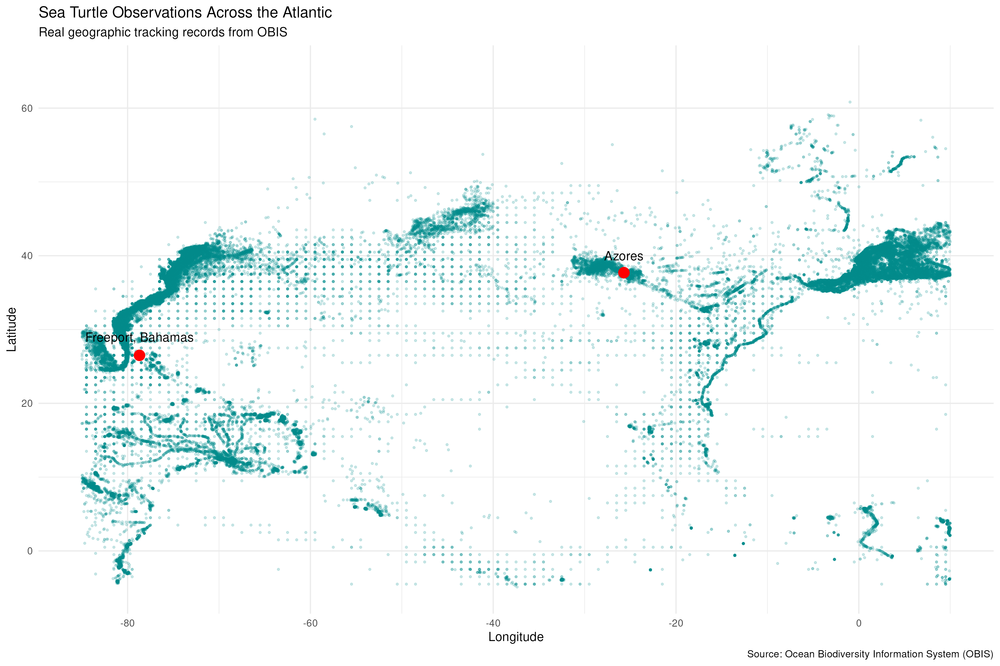

Explore Atlantic Sea Turtle Observations
Tracking Sea Turtles Across an Ocean Basin
For generations, what happened to sea turtles after hatchlings entered the surf remained largely unknown—a period marine biologists famously called the “lost years.” Today, shared global biodiversity records help illuminate how sea turtles use the Atlantic Ocean from the Caribbean and North American coast to mid-ocean islands like the Azores and the waters off Europe and West Africa.
Compiled from the Ocean Biodiversity Information System (OBIS), the observations on this page span the Atlantic study region from 85°W to 10°E longitude and 5°S to 65°N latitude, encompassing 120,718 recorded sightings and tracking locations.
Atlantic Observation Map

What the Map Shows and How to Interpret It
Each dark-cyan dot represents a recorded sea turtle occurrence in OBIS within the Atlantic study window, plotted with partial transparency so overlapping records build into deeper teal shading.
Key Patterns on the Map
- Reference Landmarks: The two red points mark Freeport, Bahamas (26.5°N, 78.7°W) in the western Atlantic and the Azores (37.7°N, 25.7°W) in the central North Atlantic—anchoring our proposed sailing corridor across the basin.
- Coastal Concentrations: Very dark bands hug the southeastern United States, the Caribbean islands, the Azores archipelago, and the coasts of southwestern Europe and northwestern Africa. Even without a background landmass layer, dense coastal observations trace the outlines of continents and island chains.
- Open-Ocean Pathways and Gridded Points: Across the open North Atlantic between the Bahamas and the Azores, two visual patterns stand out: continuous curved lines formed by sequential tracking records of moving animals, and evenly spaced dots where certain contributing datasets report sightings aggregated to regular latitude–longitude grid cells.
How to Read Observation Density Carefully: Darker areas indicate more recorded observations, which reflect both high turtle activity and higher human sampling effort (such as coastal patrols, aerial surveys, and tagging programs). Lighter areas in the central ocean do not necessarily mean turtles are absent—open-ocean waters are much harder to survey than coastlines. Likewise, the points show where turtles have been recorded rather than one single migration highway.
Atlantic Sea Turtle Species and Their Distribution
Multiple species of sea turtles inhabit the Atlantic Ocean, each occupying distinct ecological niches while overlapping along major ocean currents such as the Gulf Stream and the North Atlantic Gyre:
- Loggerhead (Caretta caretta): Widespread across temperate and subtropical Atlantic waters. Juvenile loggerheads hatched on western Atlantic beaches (including Florida and the wider Caribbean region) frequently ride the Gulf Stream into the North Atlantic Gyre, using the nutrient-rich waters around the Azores as an important oceanic foraging ground before returning west as adults.
- Leatherback (Dermochelys coriacea): The largest of all sea turtles and the widest-ranging swimmer. Built for deep diving and cooler water, leatherbacks travel far into northern Atlantic latitudes in search of jellyfish prey while nesting on tropical beaches around the Caribbean, South America, and West Africa.
- Green Turtle (Chelonia mydas): Primarily herbivorous as adults, congregating in shallow seagrass meadows and coastal lagoons throughout the Bahamas, the Caribbean, South America, and West African islands, while juveniles pass through an oceanic surface-dwelling phase.
- Hawksbill (Eretmochelys imbricata): Closely associated with tropical coral reefs, rocky ledges, and sponge habitats across the Bahamas, Caribbean Sea, and tropical Atlantic coasts.
- Kemp’s Ridley (Lepidochelys kempii) & Olive Ridley (Lepidochelys olivacea): The smaller ridley species occupy different parts of the basin—Kemp’s ridleys primarily range from the Gulf of Mexico along the U.S. Atlantic seaboard (with occasional juveniles carried eastward by currents), while olive ridleys occur mainly in warmer southern and eastern Atlantic waters.
How Researchers Use Ocean Observations
Understanding animals that cross international boundaries and vast stretches of open water requires combining several observation methods into shared repositories like OBIS:
- Satellite Telemetry: Researchers attach small, harmless transmitters to a turtle’s carapace. Whenever the turtle surfaces to breathe, satellites record its position, revealing travel routes, swimming speeds, and ocean habitats used between coastal seasons.
- Flipper and PIT Tagging: Long-term identification tags applied on nesting beaches or in coastal foraging areas allow scientists to recognize individuals years later—confirming connections between western Atlantic nesting beaches and distant pelagic feeding areas.
- At-Sea and Aerial Surveys: Research vessels, aircraft transects, and trained fisheries observers document sightings in offshore waters, helping fill gaps beyond the reach of beach monitoring.
- Oceanographic Context: By pairing observation coordinates with sea surface temperature, ocean currents, and marine productivity, researchers identify critical migration corridors and foraging hotspots—information essential for reducing bycatch and protecting sea turtles across the entire Atlantic basin.